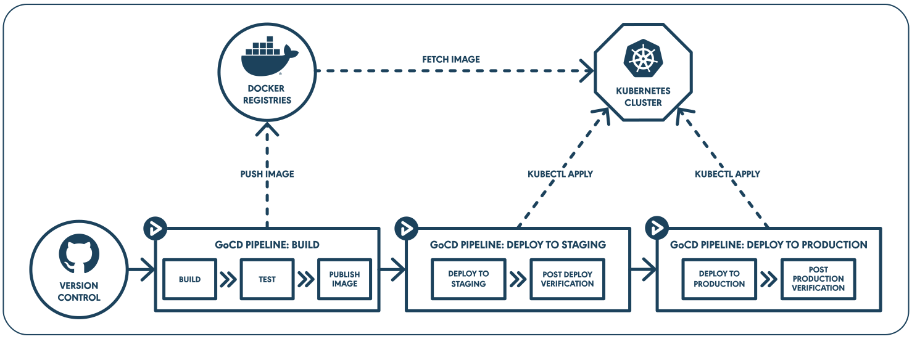

We are excited to announce the release of our Kubernetes helm chart that will allow our users to run GoCD natively on Kubernetes.
GoCD is a best-of-breed continuous delivery tool that allows you to model complex continuous delivery workflows. Kubernetes has emerged as one of the most interesting application delivery platforms. Our upcoming releases will have features that allow GoCD users to model Docker based build workflows with deployments to Kubernetes - we’ll cover more about this later in the post.
Continuous Delivery with Kubernetes
An efficient continuous delivery (CD) workflow is key to enabling high performance teams deliver software frequently, and reliably. CD workflows are specific to an organization’s processes. One of the enablers of continuous delivery is a high level of automation with few manual interventions. And so, automation around delivery infrastructure is key to a successful CD workflow.
Kubernetes provides simple abstractions for designing deployments for modern application architectures without the need for a lot of ‘configuration management’ code. A powerful API makes it programmable and easily accessible to development teams. Though Kubernetes provides the platform to build self-service delivery infrastructure, it does not provide the facilities to build and deploy your applications.
GoCD gives you the flexibility to effectively represent CD pipelines that suit your organization’s processes. Kubernetes gives you a highly programmable delivery infrastructure platform. And together, they provide the foundation for a powerful Continuous Delivery platform.
We wanted our users to be able to leverage GoCD’s pipeline modeling capabilities with Kubernetes’ developer-centric APIs to enhance their deployment process. To do this, we planned our Kubernetes-related feature releases in two steps.
Step 1 (Current Release) : Run GoCD natively on Kubernetes

Our first goal was to get GoCD to run natively on Kubernetes. In our latest release, we have provided our users with the ability to:
- Install GoCD as a Kubernetes native application with an officially supported helm chart
- Scale GoCD agents seamlessly with the new ElasticAgent plugin that spins up agents on the fly in response to build workload
- Design Docker-based build workflows using the Docker in Docker capability
Step 2 (Upcoming Releases): Model a Docker-based build workflow

Beyond enabling GoCD to run natively on Kubernetes, we are also working on giving our users the ability to fully leverage the container-based build workflow. Containerization provides a clean separation of concerns for managing applications. Docker and Kubernetes together, enable a standard and simplified CD workflow.
These upcoming features will allow our users to:
-
Use Docker images as build artifacts
Docker images are the artifacts that are generated and propagated in a Docker based build workflow. Our users will be able to designate Docker images generated during the build process as artifacts. GoCD will even publish and fetch Docker images from a registry of choice. Metadata regarding Docker image artifacts will be made available to the build context for use in downstream pipelines. -
Deploy applications to a Kubernetes environment
Deployments to Kubernetes are based on deployment specifications that are hydrated with runtime configuration. This hydrated deployment specification is then applied to a Kubernetes cluster that performs the actual deployment of the application. This capability will allow our users to compose these deployments in a continuous delivery build pipeline. -
Monitor the deployment and call it done once the services come up
Kubernetes provides a rich API to monitor the progress of a deployment and provide the status of running applications. With this capability, a GoCD build task will complete once the Kubernetes deployment has completed. This will allow for reliably triggering post-deployment stages.
We've built GoCD to encompass the best CD practices. We’ve always tried to stay true to that with every release we make and the Kubernetes plugin is no exception.
Check out our documentation on how to start using GoCD on Kubernetes with our officially supported helm chart now.